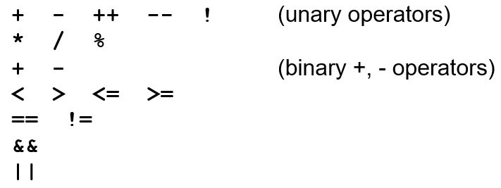
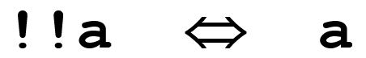

OOF
Workshop 3
Press SHIFT ? for help
Press f for fullscreen
Press CAPS for pointer
OOF Online Workshop Guide
Boolean logic
There are two possible values true and false3 > 4 false
3 <= 4 true
Boolean operator 'and'
In Java the operator is: &&
From the truth table, we can see that in an expression with all
&&, if just one condition is false,
the whole condition is false,
regardless of how many other expressions are true.
Boolean operator 'and' example
5 > 2 && 11 < 67 ... true
5 < 22 && 11 < 6 ...false
5 > 22 && 11 < 67 ...false
5 > 22 && 11 < 6 ...false
5 < 22 && 11 < 6 ...false
5 > 22 && 11 < 67 ...false
5 > 22 && 11 < 6 ...false
Boolean operator 'or'
In Java the operator is: ||
From the truth table, we can see that in an expression with all
||, if just one condition is true , the whole condition is true ,
regardless of how many other expressions are false.
Boolean operator 'or'
5 > 2 || 11 < 67 ... true
5 > 2 || 11 < 6 ... true
5 > 22 || 11 < 67 ... true
5 > 22 || 11 < 6 ...false
5 > 2 || 11 < 6 ... true
5 > 22 || 11 < 67 ... true
5 > 22 || 11 < 6 ...false
Boolean operator 'not'
In Java the operator is: !
Evaluate the condition first, then as the last step reverse the answer.
Boolean operator 'not'
In Java the operator is: !
!(11 < 67) ... false
!(11 > 67) ... true
!(11 > 67) ... true
Your turn...
What is the value of the following expressions if count is 0 and limit is 10?
(The expressions are boolean expressions that evaluate to true or false.
To determine the value of the expression,
evaluate each operand, then apply the operator as in the truth tables.)
(count == 0) && (limit < 20) true
(count < 0) && (limit <= limit) true
Your turn...
What is the value of the following expressions if count is 0 and limit is 10?
(The expressions are boolean expressions that evaluate to true or false.
To determine the value of the expression,
evaluate each operand, then apply the operator as in the truth tables.)
(limit > 20) || (count < -5) false
(count < 0) || (limit <= limit) true
Your turn...
What is the value of the following expressions if count is 0 and limit is 10?
(The expressions are boolean expressions that evaluate to true or false.
To determine the value of the expression,
evaluate each operand, then apply the operator as in the truth tables.)
!(count == 20) true
Precedence rules (order of operations)
What is the value of this expression?9 < 6 || 0 == 0 && 7 == 6
For arithmetic expressions we know that
'*' has precedence over '+'
So 3 + 4 * 6
is equivalent to 3 + (4 * 6)
Boolean operators must also be given a precedence
Java operator precedence from highest to lowest
Brackets below illustrate the order of operations applied to the expression
Java operator precedence from highest to lowest
What is the value of the following expression where;
count is 0 and limit is 10?
true
Java operator precedence from highest to lowest
What is the value of the following expression where;
count is 0 and limit is 10?
true
Java operator precedence from highest to lowest
What is the value of the following expression where;
count is 0 and limit is 10?
false
Java operator precedence from highest to lowest
What is the value of the following expression where;
count is 0 and limit is 10?
false
Short-circuit evaluation
Java uses short-circuit evaluationFor example
Your turn...
What is the value of the following expression where;count is 0 and limit is 10?
false
true
false
divide by zero error
Equivalent expressions
Some boolean expressions can be expressed in various equivalent formsChoose the one easiest to understand (if possible)
x <= 5 && x >0
is the same as
!(x <= 0) && !(x > 6)
Relational operators (example)
How can we decide to do something if time is not greater than limit?Assume time is 20 and limit is 30
Problems? Look at the order of operations (precedence) !time is a boolean operator acting on an integer type – this will not compile
Relational operators (example)
How can we decide to do something if time is not greater than limit?Assume time is 20 and limit is 30
Rules for distributing ! over relational operators
Rewrite without !
!(numberOfGames > 5)numberOfGames < 6
!(balance + interest <= 2000)
balance + interest > 2000
!(userInput != 'q')
userInput == 'q'
De Morgan’s law

Distribute the ! over the operators
!(apples || oranges)
!apples && !oranges
!(input == 'y' && tries < 5)
!input == 'y') || !(tries < 5)
!(input == 'n' && tries >= 6)
!input == 'y') || !(tries < 5)
De Morgan’s law
Two negations cancel one another
Simplify
!(!(tries > 5))
tries > 5
!!(bananas != 6)
bananas != 6